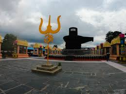
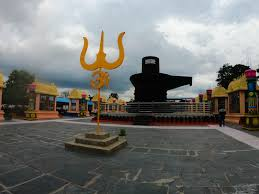

Explore Karnataka's Top Destinations
Hampi
Step back in time at Hampi, a UNESCO World Heritage site full of ancient temples and architecture
Hampi, a UNESCO World Heritage site, embodies Karnataka's ancient glory
through its grand ruins and Vijayanagara Empire's history.

Coorg
Experience the serene beauty of Coorg, with its rolling hills, coffee estates, and lush green forests.
Coorg offers a distinct cultural experience with its
lush coffee plantations, unique Kodava traditions, and folk festivals.
Mysore
Visit the royal Mysore Palace and explore the rich cultural history of the city known for its royal heritage.
Mysore is famous for its royal heritage and vibrant festivals like
Dasara, showcasing classical music, dance, and the grandeur of the Mysore Palace.

Gokarna
Relax at Gokarna, famous for its pristine beaches and pilgrimage sites along the Arabian Sea.
Gokarna blends spirituality with nature, renowned for its
serene beaches and sacred temples like Mahabaleshwar.
kotilingeshwara
Kotilingeshwara is a spiritual marvel, home to millions of Shiva lingas, symbolizing devotion and faith
The name "Kotilingeshwara" translates to "The Lord of a Crore Lingas," and the site is known for having thousands of these lingas,
creating a mesmerizing and spiritually uplifting experience for visitors
 

murudeshwara
Murdeshwara mesmerizes with the towering statue of Lord Shiva by the sea,
blending spirituality with breathtaking coastal beauty.
Malpe reflects Karnataka’s coastal culture with its pristine
beaches and proximity to the spiritual town of Udupi.
Shivmoga
Shivamogga is known for its natural beauty, like Jog Falls, and rich Kannada literature and folk traditions.
Shivamogga is home to stunning landscapes, including the famous Jog Falls, one of the highest waterfalls in India.